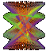
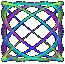
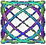
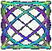

Why turn away from... All this unknown, all this not knowing...
We breathe, we are
randomness, intriguing randomness
clouds drifting in unplanned form
by coincidence
Like words across the sky
< A sense of signifigance
chance moment transformed in our minds 
sunset vision of beauty ^^^^^
 art in nature, recognised
not by the hand, made
but by the eye recorded.
return to What Is?

art in nature, recognised
not by the hand, made
but by the eye recorded.
return to What Is?

art in nature, recognised
not by the hand, made
but by the eye recorded.
return to What Is?
